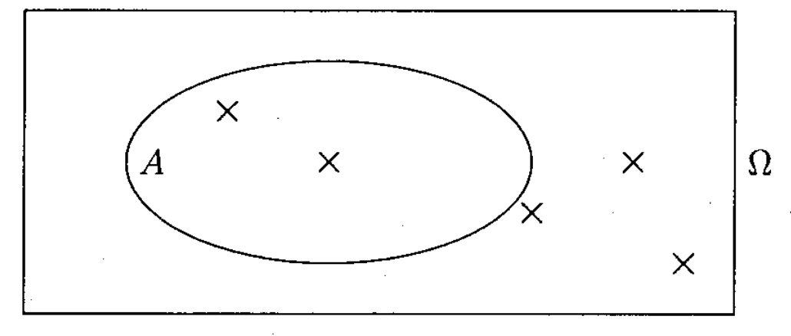
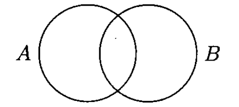
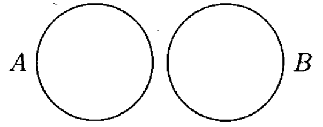
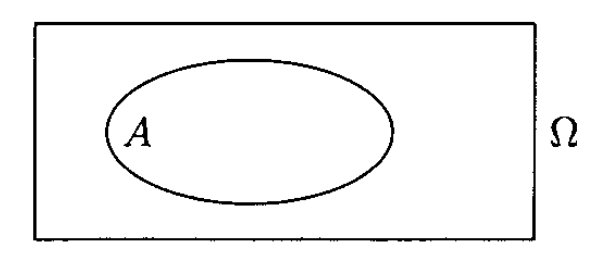

Probabilités
Dénombrement
Définition
Dénombrer, c'est calculer le nombre de possibilités de grouper un certain nombre d'éléments d'un ensemble.
Probabilité d'un événement
Définition
Soit une expérience aléatoire d'univers $\Omega$ fini, avec $\Omega = \{ e_1; e_2; ... ;e_n \}$
-
Définir une loi de probabilité sur $\Omega$, c'est associer à chaque issue $e_i$ un nombre positif $p(e_i)$ tel que:
$$ p(e_1) + p(e_2) +...+ p(e_n) = 1 $$ -
Le nombre $p(e_i)$ est appelé : probabilité de l'événement élémentaire
-
La probabilité d'un événement $A$, notée $p(A)$, est la somme des probabilités de toutes les issues qui réalisent $A$.
Propriétés
-
La probabilité de l'événement certain $\Omega$ vaut:
$$ p(\Omega) = 1 $$ -
La probabilité de l'événement impossible $\emptyset$ vaut:
$$ p(\emptyset) = 0 $$ -
Pour tout événement $A$, on a:
$$ 0 \leqslant p(A) \leqslant 1$$ -
Pour tout événement $A$, $p(A) + p(\bar{A}) = 1$
Définition
Si une expérience aléatoire d'univers $\Omega$, avec $\Omega = \{ e_1; e_2; ... ;e_n \}$. Si tous les événements élémentaires ont la même probabilité, on dit qu'ils sont équiprobable, et on a:
$$ p(e_1) = p(e_2) = ... = p(e_n) = \frac{1}{n} = \frac{1}{card \Omega } $$Arrangement avec répétition
Arrangement avec répétition $B$ de $p$ éléments distincts ou non choisi parmi $n$ éléments distincts:
Les $n$ éléments sont tous utilisés.
Les éléments ne se répètent pas.
-
Deux groupements diffèrent uniquement par l'ordre des éléments.
Formule
$$ B^{p}_{n}=n^{p} $$Permutation
Permutation $P$ de $n$ éléments distincts:
-
Les éléments donnés ne sont pas tous utilisés.
-
Les $p$ éléments choisi peuvent se répéter.
-
Deux groupements diffèrent soit par l'ordre soit par la nature des éléments.
Formule
$$P_{n}=n!$$
Arrangement sans répétition
Arrangement sans répétition $A$ de $p$ éléments distincts choisis parmi $n$ éléments distincts:
- Les $n$ éléments donnés ne sont pas tous utilisés.
- Les $p$ éléments choisis ne se répètent pas.
- Deux groupements diffèrent soit par l'ordre soit par la nature des éléments.
Formule
$$A^{p}_{n}=\frac{n!}{(n-p)!} $$ $$\left( p \leqslant n \right)$$Combinaison
Combinaison $C$ de $p$ éléments distincts choisis parmi $n$ éléments distincts:
- Les $n$ éléments donnés ne sont pas tous utilisés.
- Les $p$ éléments choisis ne se répètent pas.
- Deux groupements diffèrent uniquement par la nature des éléments.
Formule
$$C^{p}_{n}=\frac{n!}{p!\left( n-p\right) !} =\frac{A^{p}_{n}}{P_{n}} $$ $$\left( p \leqslant n \right)$$Vocabulaire des événements
Définition
-
Une expérience est dite aléatoire lorsqu'elle a plusieurs résultats possible et qu'on ne peut pas prévoir lequel sera obtenu. Le résultat d'une tell expérience est uniquement dû au hasard.
-
Une issue d'une expérience aléatoire est un résultat possible pour cette expérience.
-
L'ensemble de toutes les issues d'une expérience aléatoire est appelé univers associé à cette expérience.
On note souvent: $\Omega$ -
Un événement $A$ est sous-ensemble de l'ensemble $\Omega$.
On dit qu'une issue réalise un événement $A$ lorsque cette issue est un résultat appartenant à la partie $A$.
Schéma
Événements particuliers
-
L'événement impossible est l'ensemble vide noté $\emptyset$ : aucune issue ne le réalise.
-
L'événement certain est l'univers $\Omega$: toutes les issues le réalisent.
-
Un événement élémentaire est un événement formé d'une seule issue.
Événements
Définition
L'intersection de $A$ et $B$, notée $A \bigcap B$ ou $A$ et $B$, est l'événement constitué des issues qui réalisent $A$ et $B$ en même temps.
Définition
Dans le cas où $A$ et $B$ ne peuvent pas être réalisés en même temps, c'est à dire si $A \bigcap B \notin \emptyset$, on dit que $A$ et $B$ sont incompatible ou disjoint.
Définition
La réunion de $A$ et de $B$, notée $A \bigcup B$ ou $A$ ou $B$, est l'événement constitué des issues qui réalisent $A$ ou $B$, c'est à dire au moins l'un des deux.
Définition
L'événement contraire de $A$, noté $\bar{A}$ est constitué [...] de $\Omega$ qui ne réalisent pas $A$
Propriété
Soit une expérience aléatoire où les événements élémentaires sont équiprobables et soit $A$ un événement, alors on a:
$$ p(A) = \frac{nombre\ d'issues\ de\ A}{nombre\ totales\ d'issues} $$ $$ =\frac{nombre\ d'issues\ favorable\ de\ A}{nombres\ d'issues\ possibles} $$Arbres pondérés
Propriétés
-
Dans un arbre pondéré, la probabilité d'un chemin est égale au produit des branches qui le composent.
-
Dans un arbre pondéré, la probabilité d'un événement
composé
est égale à la sommes des probabilité qui le composent.
Variable aléatoire
Définition
Pour définir une variable aléatoire $X$ sur un univers $\Omega$ d'une expérience aléatoire, on associe un nombre réel $x_i$, a chaque éventualité $e_i$ de $\Omega$.
Probabilité d'une variable aléatoire
Définition
La loi de probabilité d'une variable aléatoire $X$ est la fonction qui à chaque valeur $x_i$ prise par $X$ associe la probabilité: $p \left( X = x_i \right)$
Espace mathématiques
Definition
L'espérance mathématique de la variable aléatoire $X$, notée $E \left( X \right)$ est la somme des produits de chaque valeur prise par $X$ par la probabilité que $X$ prenne cette valeur :
$$ E \left( X \right) = \sum^{k}_{i=1} x_{i}\cdot P\left( X=x_{i}\right) $$ $$ = x_1 \cdot p \left( X = x_1 \right) + x_2 \cdot p \left( X = x_2 \right) + ... + x_k \cdot p \left( X = x_k \right) $$Propriété
Si $X$ est une variable aléatoire égale au gain algébrique d'un jeu hasard, alors $ E \left( X \right)$ représente le gain moyen auquel on peut s'attendre.
-
Si $ E \left( X \right) > 0$, on dit que le jeu est favorable au joueur.
-
Si $ E \left( X \right) = 0$, on dit que le jeu est équitable au joueur.
-
Si $ E \left( X \right) < 0$, on dit que le jeu est défavorable au joueur.
Variance
Définition
On appelle variance d'une variable aléatoire $X$ le nombre $V(X)$ défini par:
$$ V \left( X \right) = \sum^{k}_{i=1} \left( x_{i}-E\left( X\right) \right)^{2} \cdot p\left( X=x_{i}\right) $$ $$ = \left( x_{1}-E\left( X\right) \right)^{2} \cdot p\left( X=x_{1}\right) + \left( x_{2}-E\left( X\right) \right)^{2} \cdot p\left( X=x_{2}\right) +... +\left( x_{k}-E\left( X\right) \right)^{2} \cdot p\left( X=x_{k}\right) $$Propriété
$$ V \left( X \right) = \sum^{k}_{i=1} x^2_i \cdot p\left( X=x_{i}\right) - \left( E \left( X \right) \right)^2 $$ $$ = x^{2}_{1}\cdot p\left( X=x_{1}\right) + x^{2}_{2}\cdot p\left( X=x_{2}\right) + ... + x^{2}_{k}\cdot p\left( X=x_{k}\right) - \left( E \left( X \right) \right)^2 $$ $$ = E \left( X^2 \right) - \left( E \left( X \right) \right)^2$$Écart type
Definition
On appelle écart type d'une variable aléatoire $X$ le nombre $\sigma(X)$ défini par:
$$ \sigma(X) = \sqrt{V(X)} $$Propriété
Plus l'écart type et la variance sont grands, plus la variable aléatoire est dispersée.